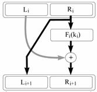
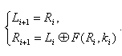

Файстел тармоғи хоссалари ва турлари
1970 йилларнинг бошларига келиб электрон ахборот алмашинувида маълумотларни ҳимоялаш максадида IBM компанияси узининг дастурларини ишлаб чиқишга киришди, жумладан криптография сохасида ҳам. Уша даврларда криптография билан Америка Қўшма Штатларидаги бир қатор университетлар (Станфордский, Массачусетский) шуғулланишарди. IBM компанияси мутахассислари университет мутахассисларини электрон ахборотни ҳимоя қилиш учун усуллар яратишга қизиқтиришга ҳаракат қилди. Университет мутахассислари ҳарбий ташкилотлар билан биргаликда ишлашга фаол ҳаракат қилишарди, чунки криптографик усулларни амалда қўллайдиган ташкилотлар ҳарбийлар эди.
IBM компанияси бу ишни амалга оширишда уша даврларда анча танилган доктор Хорсть Файстельни бу ишларга бош қилиб қўйди.
Файстель ва унинг рахбарлигидаги IBM Watson Research Lab лабораториясида олиб борилган ишлар натижасида қайтмас акслантиришлар базаси асосида симметрик шифрлаш алгоритми яратилди. Янги яратилган шифрлаш алгоритми Фейстель архитектураси деб номланди. Хозирги замон криптографиясида бу термин асосан Фейстель тармоқлари (Feistels network) деб юритилади.
Тескариси мавжуд бўлган криптобардошли криптографик акслантиришлар хосил қилиш жуда мураккаб масала. Бундан ташқари тескариси мавжуд бўлган акслантиришлар тадбиқида одатда самарадорлиги паст бўлган алгоритмларни ўз ичига олади.
Шу сабабли Фейстель маълумотларни тескари акслантириш муммосини ечишга эмас, балки бундай акслантиришлар умуман қатнашмаган шифрлаш схемасини топишга ҳаракат қилди.
Маълумотларни шифрлашда mod2 амалини қўллаш ғояси классик шифрлаш алгоритмларида, умуман олганда техник тадбики нуктаи назаридан оддий бўлган гаммалаштиришда вужудга келган. Бу усулнинг бардошлилиги танланган гамманинг хусусиятига боғлиқ.
Фейстель муаммони куйидагича ечди:
Биринчи, шифрлаш алгоритмининг биринчи итерациясида шифрланадиган маълумотлар блокининг ўлчами олинади. Одатда, блок ўлчами олдиндан белгиланган бўлиб, шифрлашда бу қиймат узгармайди.
Етарлича катталикдаги маълумотлар блоки олиниб, у маълум катталикдаги блокларга бўлинади, масалан тенг 2 га, кейин уларнинг ҳар бири устида амаллар бажарилади.
Агар блокнинг чап ярми ўнг ярмига тенг бўлса, бундай архитектура баланслаштирилган Фейстель тармоғи деб юритилади. Агар блок бўлингандаги бўлаклар тенг бўлмаса бундай алгоритм баланслаштирилмаган Фейстель тармоғи деб юритилади.
Фейстель тармоғи ёрдамида шифрлаш жараёнини қуйидаги расмда кузатиш мумкин булади.
Фейстель тармоғи архитектураси:

Расмдаги Li ва Ri маълумотни кетма-кет акслантиришларнинг i - қадамдаги чап ва ўнг бўлаклари.
Ҳар бир бундай тўлик қадам шифрлаш раунди деб юритилади.
Шифрлаш функцияси Fi билан белгиланган.
Мазкур битта раунддаги маълумот шифрланишининг математик модели қуйидаги формула орқали ифодаланади:

Баланслаштирилмаган Фейстель тармоғи архитектураси олдингисига ўхшаш бўлиб ҳисоблашлар ҳам шу усулда амалга оширилади. Ягона фарқи шундаки, блокларга ажратишда блоклар сони бир-биридан фарқ қилади, F функция берилган блокнинг барча битларига боғлиқ бўлмаслиги мумкин ёки турли раундларда турлича бўлиши мумкин. Умуман олганда баланслаштирилмаган Фейстель тармоғини умумлашган Фейстель тармоғи сифатида караш мумкин.
Фейстель тармоғи асосида қурилган криптотизим бардошлилиги, тўлалигича бир неча итерацияда амалга оширилган чизиксиз шифрлаш функция натижасига боғлиқ. Шунинг учун маълумот ишончлигини таъминлаш учун акслантириш раундлар сонини етарлича катта танлаш керак.
Фейстель тармоғига асосланган кўпгина шифрлаш алгоритмларида, ишлатиладиган F функция ҳар раундда асосий шифрлаш калитидан ишлаб чикилган битта кисм калитга боғлиқ. Аслида бу хусусият алгоритмнинг криптобардошлилигини оширади деб бўлмайди.